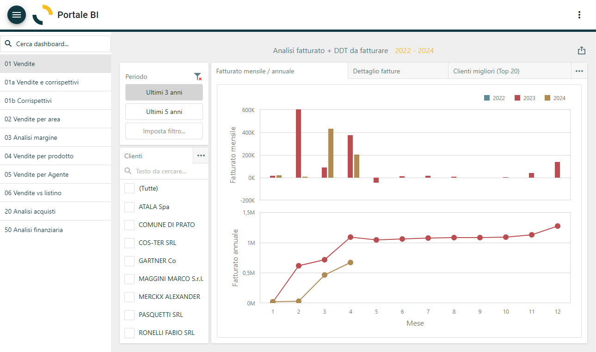

Portale Business Intelligence
La soluzione Business Intelligence permette di analizzare i processi e i dati aziendali, trasformarli in informazioni che permettono di assumere decisioni tramite informazioni dettagliate e permette di analizzare sia i dati storici sia i dati correnti, presentando i risultati sotto forma di report, grafici, diagrammi e mappe facilmente analizzabili.
I report utilizzano riepiloghi ed elementi visivi come diagrammi e grafici per mostrare agli utenti tendenze nel tempo, relazioni tra variabili e numerosi altri fattori. Essendo anche interattivi, permettono agli utenti di effettuare la scomposizione e l'analisi delle tabelle o di eseguire il drill down dei dati a seconda delle esigenze.
La procedura, tramite le credenziali configurate per l'utente, consente di accedere direttamente al portale Business Intelligence.
